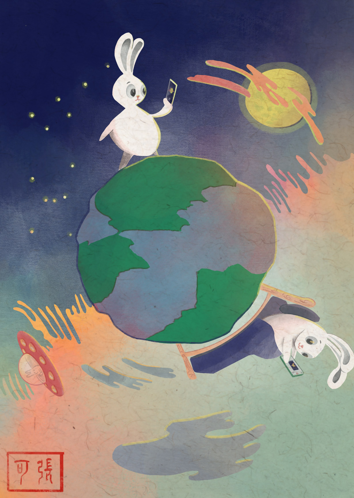
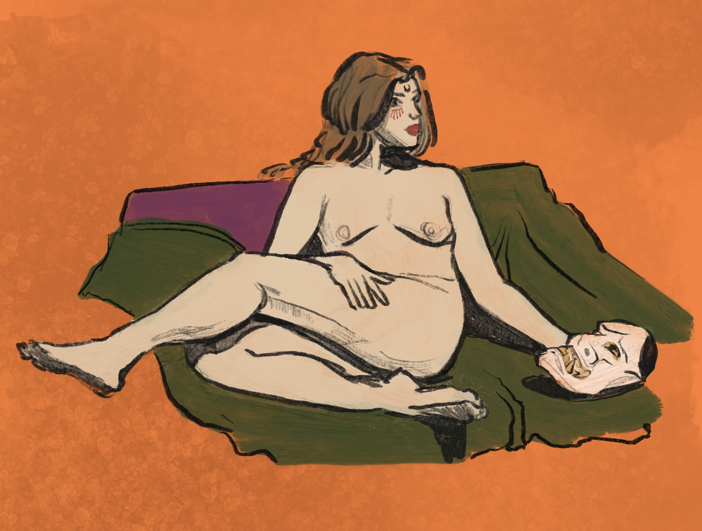
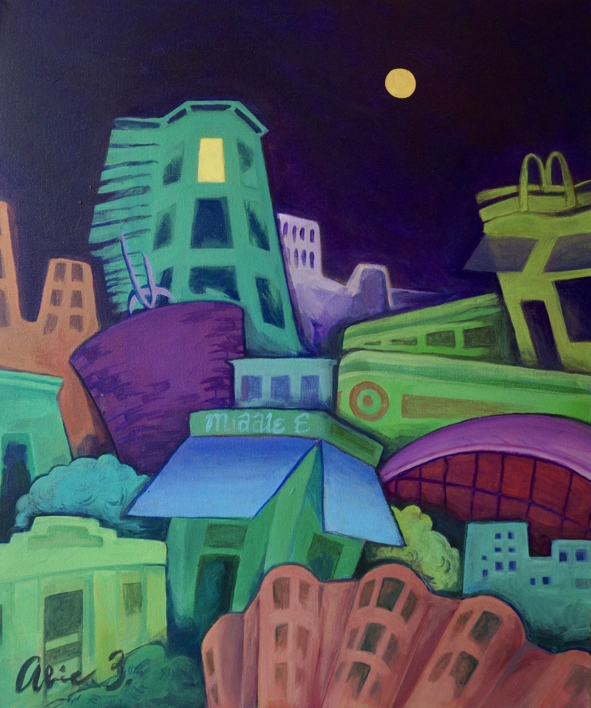

Postcards
A series of en plein air postcards from my travels. Made with acrylic paint pens, color pencil, pencil, and pen.
Illustration
Digital drawings made with Procreate.
For long distance friends who love the moon (2023)
Halloween figure drawing (2024)
Felting adventures
Making wearable items out of wool roving. Using needle felting and wet felting techniques.
Film photos
I shoot on a Pentax K1000 and sometimes do darkroom stuff.
Painting
Acrylic painting my first love <3.
Up late in Central Square (2021)